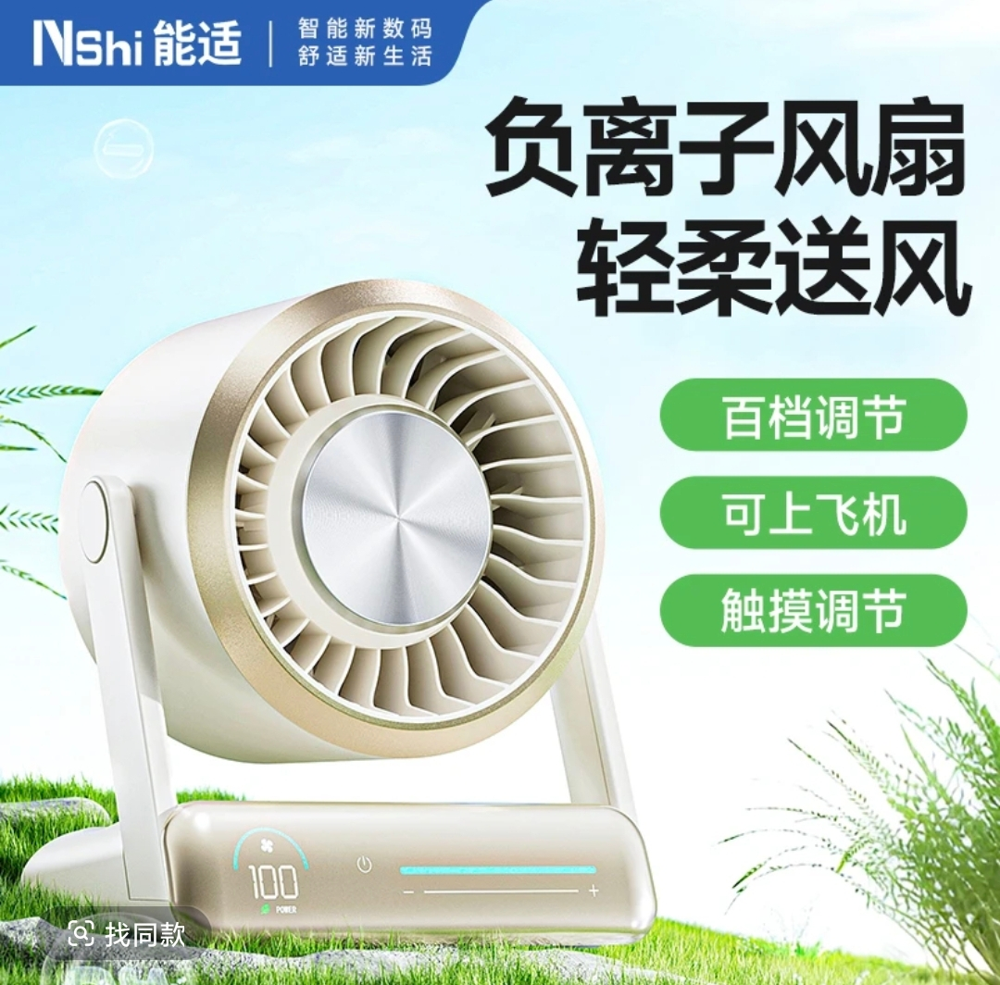
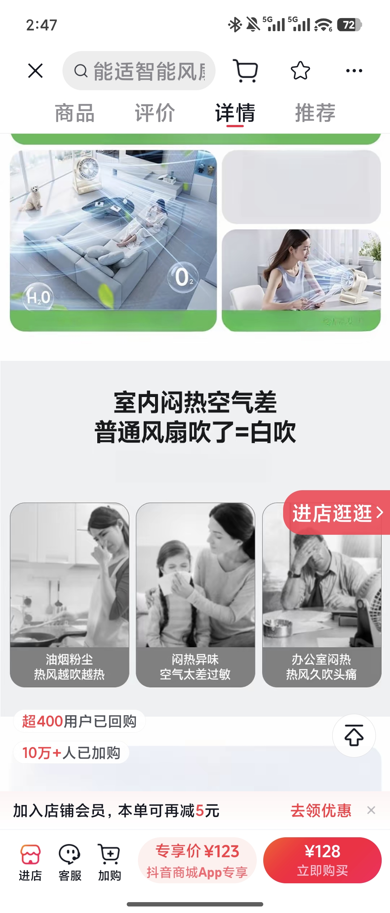

深圳绿胜 · NShi 能适
负离子智能便携风扇（冷风炮）
S3 挖掘场景 · 独立调试产物 · 品类：新奇特小家电
负离子净化 · 久吹不头疼
100 档无极 · 触控调节
飞机涡轮扇叶 · 3D 空气炮风道
可上飞机 · 20h 续航
专享价 ¥123 · 10 万+人加购


S3 输入（简版）：主攻人群 = 办公室久坐党 × 宿舍/自习党 × 怕热怕闷人群；主攻买点 = 负离子净化久吹不头疼 · 100 档柔风/强风 · 涡轮风量结构（对比普通风扇"吹了=白吹"）。以下场景全部来自内容侧先探 + 四问填充。
场景需求卡 · 主攻 3 / 可测试 1
SC-01 办公室久吹 · 不头疼主攻
触发办公室闷热、空调久吹难受、同事烟味/异味。
画面工位实拍：普通风扇吹着头痛揉太阳穴 → 换能适风扇，负离子净化空气、柔风不直吹；"男同事身上烟味"等空气问题被点名解决。
痛点热风越吹越热、久吹头痛、办公室空气差（详情页三大痛点直接对应）。
拍法：工位前后对比 + 风感实测。口播："谁懂？这个久吹不头疼的负离子风扇"
已验证 "久吹不头疼"内容 5.1k 赞；"能净化空气的桌面风扇、解决办公室空气危机"2.4 万赞（官方同款内容）
SC-02 午休 · 被冷醒主攻
触发办公室/宿舍午休，风扇噪音大或风太热。
画面午休趴桌，风扇静音运转 + 悬浮降噪扇叶特写；"吹着它午休被冷醒了"（内容原话）——风够凉、还安静。
痛点风扇吵、午休被热醒、开最大档噪音大。
拍法：午休场景 + 噪音对比（分贝数值）。口播："午休能被冷醒的风扇，静音还凉快"
已验证 "午休被冷醒"9.4k 赞；"开到最大也不会打扰休息"内容
SC-03 桌面摆件 · 质感出圈主攻
触发桌面空位、想给工位/书桌添个好看又实用的物件。
画面触控面板滑动调风特写（"丝滑"手势）→ 桌面视角：颜值摆件属性 + 百档调节演示。
痛点普通风扇丑、塑料感。
拍法：触控手势特写 + 桌面场景。口播："这风扇怕不是苹果新出的…"
已验证 "丝滑触控面板、自带摆件属性、怕不是苹果新出的"5.1k/9.4k 赞内容
SC-04 差旅随身 · 可上飞机可测试
触发出差/旅行酒店闷热、高铁办公。
画面酒店/高铁场景掏出便携风扇，20h 续航一整天；登机安检镜头"可上飞机"。
痛点酒店空调不凉、随身风扇续航短。
拍法：差旅场景 + 续航/安检特写。口播："能带上飞机的风扇，差旅降温全靠它"
已验证 "充电款 20h 续航从早吹到晚"内容；便携属性被多条内容验证